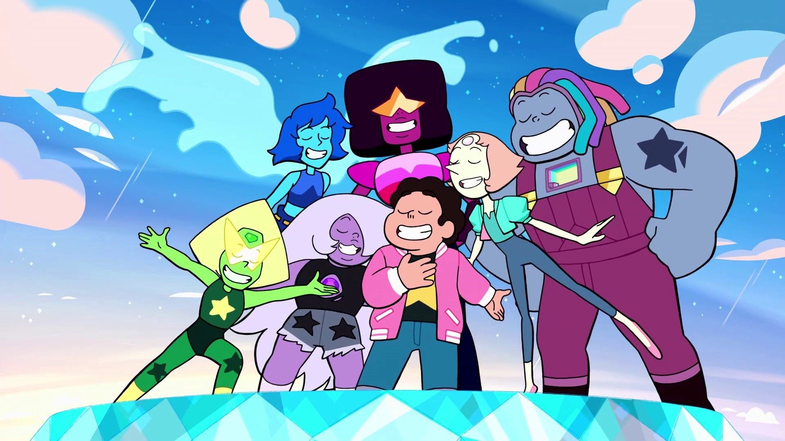
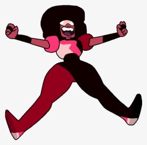
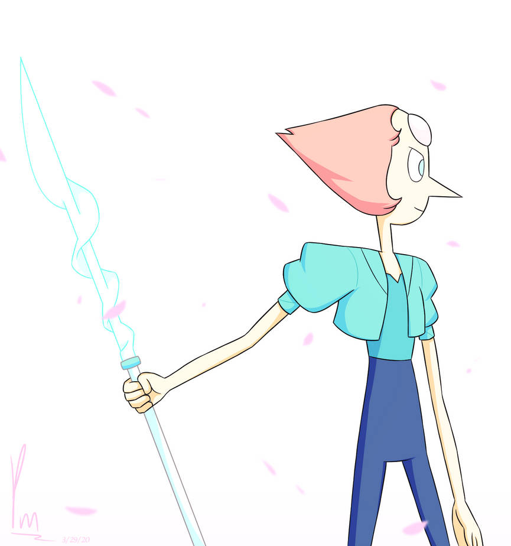
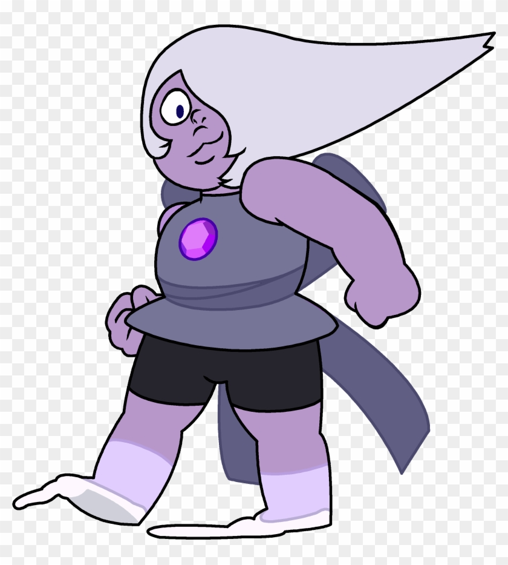
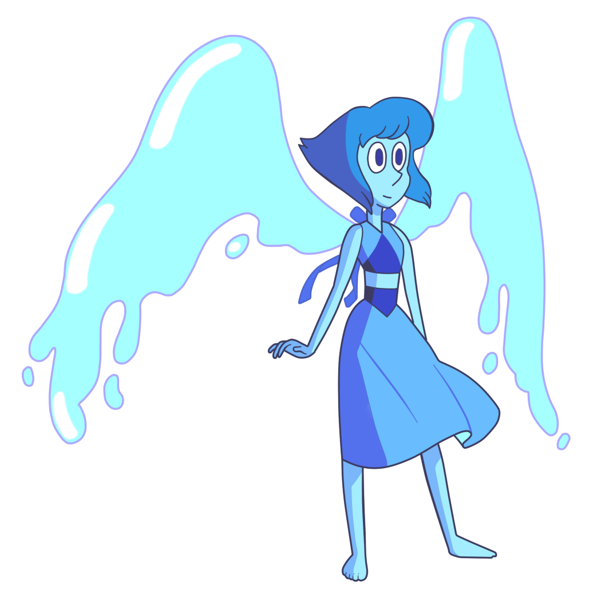
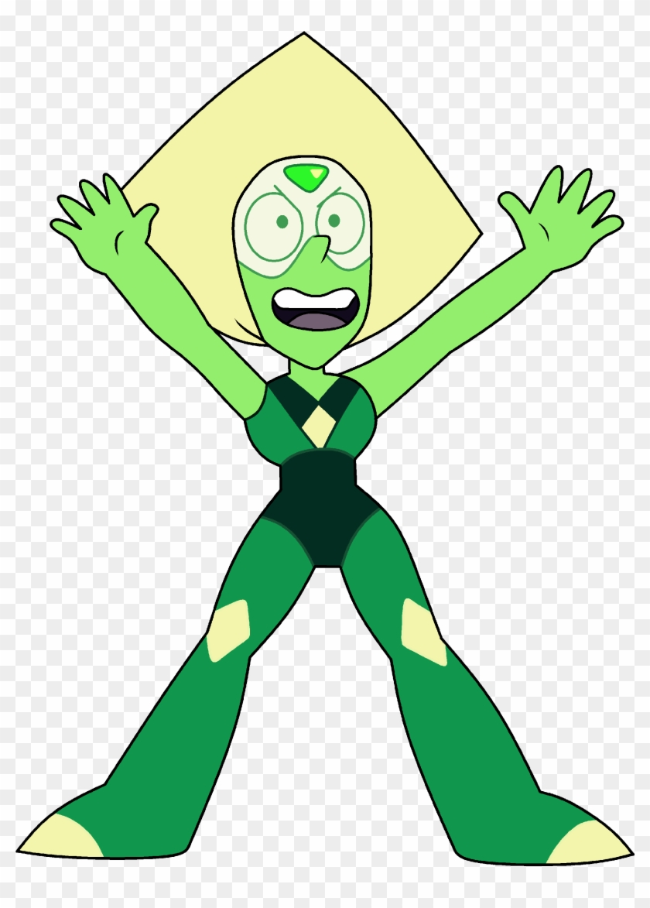
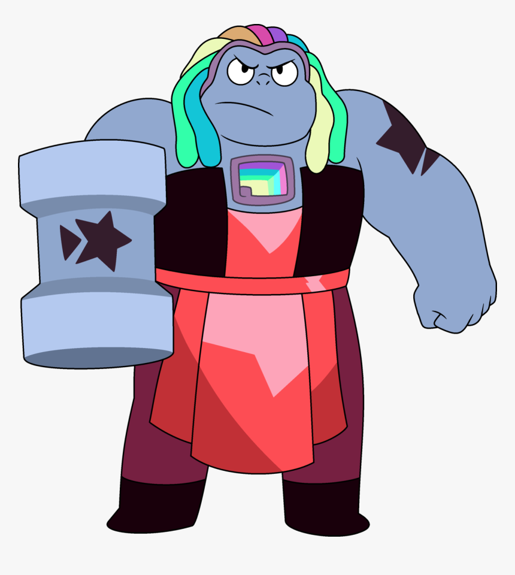

<!DOCTYPE html>
<html>
<head>
	<meta charset="utf-8">
	<meta name="viewport" content="width=device-width, initial-scale=1">
	<link rel="stylesheet" type="text/css" href="bootstrap.css">
	<link rel="stylesheet" href="https://cdn.jsdelivr.net/npm/bootstrap@4.0.0/dist/css/bootstrap.min.css" integrity="sha384-Gn5384xqQ1aoWXA+058RXPxPg6fy4IWvTNh0E263XmFcJlSAwiGgFAW/dAiS6JXm" crossorigin="anonymous">
	<title>Bootstrap 4</title>
	<style type="text/css">
		body{
          background: url(steven.png);
          background-size: cover;
          background-attachment: fixed;
          padding: 20px;
		}
		.container{
			padding: 20px;
		}
		h1{
			color: #926ab0;
		}
		h2{
			color: #440447;
		}
		h3{
			color: #915c94;
		}
	 </style>
</head>
<body>

</body>
</html>
<body>
	<div class="container bg-light">
		<h1>ೃ⁀➷Steven Universe!</h1>
	<hr>
	
	<br>
	<h2>˚ ༘♡ ⋆｡˚Characters!˚ ༘♡ ⋆｡˚</h2>
	<div class="row">
	   <div class="col-3">
	   	
	   </div>
	   <div class="col-9">
          <h3>Steven Universe</h3>
          <p>Steven is the main protagonist of the cartoon show. It is a all-ages animated series that airs on Cartoon Network. Steven is a human/gem hybrid he is capable of using a Gem magic. Steven's job was to protect the Earth and gemstones from alien beings, Steven has the ability to fly and control of his gemstones.</p>
	   </div>
	    <div class="col-9">
	   	<h3>Garnet</h3>
	   	<p>Garnet is a leader of the Crystal Gems, she is a motherly figure to Steven. She has a high tolerance for pain, and the most physically durable of gems. She has a lot of abilities like Rocket Gauntlet, Weapon size Augmentation, Deflection, Future Vision, and etc. She joined the Crystal gems and became leader to stop the invasion from their planet and protect the gems.</p>
	   </div>
	   <div class="col-3">
	   	
	 </div>

	 <div class="col-3">
	 	
	</div>
	<div class="col-9">
	<h3>Pearl</h3>
	<p>Pearl is a very caring and motherly figure to Steven but also strict and rigid. Her profession is Crystal Gem, defender of the word against attacks from monsters. She is a Pearl alien, and one of the most powerful. Her forehead allows her to create a magical spear and make illusions, and very dedicated about her goals. Overall she is a wonderful part of the Crystal Gems.</p>
    </div>

    <div class="col-9">
	   	<h3>Amethyst</h3>
	   	<p>Amethyst is a gem alien like Pearl! Her superpowers from the gems are embedded in her body. In her chest it allows her to form a magical extendable whip and change body's shape. Amethyst is just as old as Steven and they bond together like siblings and bestfriends, many of her and steven's interests align together. She also wanna save the Earth but also have a good time.</p>
	   </div>
	   <div class="col-3">
	   	
	 </div>

	 <div class="col-3">
	 	
	</div>
	<div class="col-9">
	<h3>Lapis Lazuli</h3>
	<p>Lapis is a Gem formed in Blue diamond that makes her control water and create powers. Her gems are Mirror Gem and Ocean Gem, Steven helped her out to set free especially. She used to despise Garnet, Amethyst, and Pearl for forgetting she was trapped in a mirror and being the reason why Homeworld mistook her for a Crystal Gem. Eventually she forgave them, and respects Steven a lot! She finally joined Crystal Gems after being caught up forming bonds with the others and saw Earth as her home.</p>
    </div>

    <div class="col-9">
	   	<h3>Peridot</h3>
	   	<p>She is one of the members of Crystal Gems and one of the supporting characters. She was sent from Homeworld to check the progess of Cluster, instead she was left stranded on Earth and nowhere else to go. She decided to help Crystal Gems to destroy Cluster. </p>
	   </div>
	   <div class="col-3">
	   	
	 </div>

     <div class="col-3">
	 	
	</div>
	<div class="col-9">
	<h3>Bismuth</h3>
	<p>She is one of the original and current member of the Cyrstal Gems. she and Rose Quartz (Steven's Mom) had a conflict of interests, leading to them falling out. This ultimately led to Bismuth being poofed, bubbled, and left inside of the Pink Dimension. Years later Steven accidentally freed her, Bismuth and Steven fought and she was poofed and bubbled again by him. afterward out of fear she might lash out again until Steven finally freed her again in "Made of Honor" to re-join the team permanently. After her return, Bismuth begins taking on a mentor role for Steven alongside her fellow Crystal Gems</p>
    </div>
 
</div>
</body>
</html>